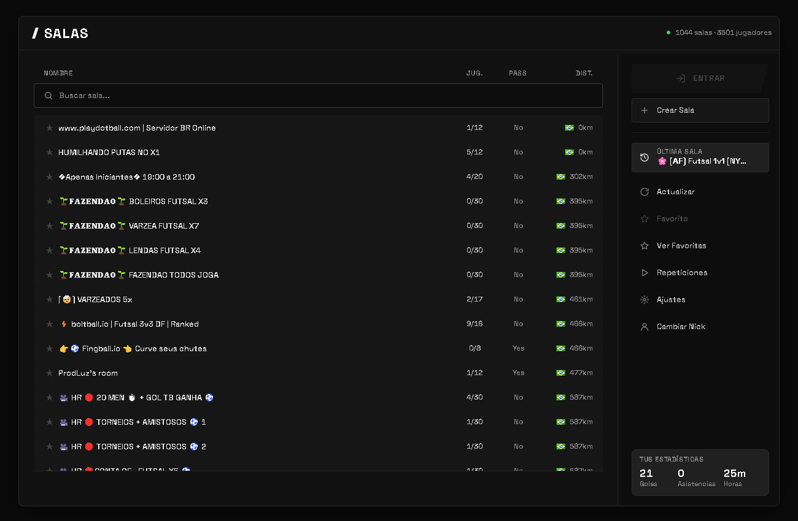

FPS desbloqueados
FPS desbloqueados con un medidor integrado. Escribe /fps para ver los tuyos.
Más fluidez, tu propia imagen, uniformes, replays automáticos y actualizaciones con un clic.

Todo se configura desde el engranaje de la barra superior del cliente.
FPS desbloqueados con un medidor integrado. Escribe /fps para ver los tuyos.
Elige el color que mejor veas. Solo lo ves tú.
4:3, 5:4 o la que escribas, como en los shooters competitivos.
Personalizados, con vista previa, biblioteca y asignación por equipo. Más selecciones y clubes de ejemplo con un clic. Solo los ves tú.
Avatares animados en tus partidas.
Se graban las partidas en las que juegas. Los archivos .hbr2 se abren con doble clic.
/fps para ver tus FPS y !bb para salir de una sala al instante.
Lista de salas, sala y ajustes con un mismo diseño, claro de leer y ligero.
Rally avisa de cada versión nueva, se descarga e instala sola y te enseña lo que cambió.
Así se ve el cliente por dentro.


Lo mismo que Rally te muestra al abrir tras actualizar.
Cargando…
Para Windows 10 y 11, 64 o 32 bits. No hace falta ser administrador.
¿Otra versión? Ver todas las Releases
Es el archivo Rally-Setup-<versión>.exe.
Elige la carpeta si quieres y termina la instalación. Se abre solo al acabar.
La guía de bienvenida te enseña lo básico. Puedes releerla en Ajustes → Varios.
Como el instalador aún no está firmado digitalmente, Windows puede mostrar «Windows protegió su PC». Pulsa Más información → Ejecutar de todas formas.
En Releases verás otros archivos (.blockmap, latest.yml, latest.json): los usa Rally para actualizarse. Tú solo necesitas el .exe, y solo desde este repositorio.
Rally es un proyecto independiente. No está afiliado ni respaldado por HaxBall ni por su autor.
%APPDATA%\RallyClient\Replays y %APPDATA%\RallyClient\Stadiums. Ajustes → Replays tiene un botón para abrir la carpeta.